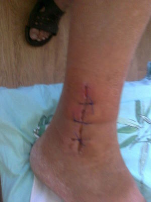

Cómo curar los dolores en las articulaciones
Quiero contarles la historia de cómo eliminé los dolores en mis rodillas causados por la artrosis y la osteocrondosis en la parte baja de mi espalda. No soy médico, así que no les explicaré cómo curarlo, simplemente les contaré lo que pasó.
Tengo 62 años y estoy pensionado. Antes de retirarme, trabajé en el horno de una planta metalúrgica. Al principio era un trabajador como cualquier otro, pero luego empecé a trabajar como ingeniero de seguridad. Quienes conocen esta profesión, saben que este trabajo es muy diferente al de un trabajador del metal. Estos simplemente hierven el hierro, lo único que tienen que hacer es presionar unos botones. Lo haciamos todo a la antigua. Si era necesario, usábamos una pala y a veces incluso una palanca. La superficie era increíblemente caliente, y era imposible escapar de las constantes bocanadas de aire. Arruiné mis rodillas y mi espalda en ese lugar.
El dolor constante tiene un impacto negativo directo en la apariencia. Envejecí muchísimo en tan solo 3 años.
Es positivo que tuve que retirarme a los 50 debido a mis años de servicio. No me quedaba nada de fuerza. Pude mantenerme el último año gracias a inyecciones de analgésicos . Tuve suerte de que me dieran ese puesto como ingeniero. Ese trabajo era mucho más sencillo, lejos de las calderas. Le hizo bien a mi salud, tuvo un impacto positivo en mí. El dolor bajó, incluso pude seguir sin los analgésicos por un tiempo. Pero tres años antes de retirarme tuve un accidente. Me lastimé la pierna mientras pescaba. El shock por el dolor y la constante toma de analgésicos afectaron mi frágil estado, y empecé a sufrir de dolor agudo en las rodillas y espalda.

Debido a este accidente, mi artritis empezó a avanzar bastante rápido.
Ni siquiera quiero recordar esa época. ¡Vivía un infierno! En las mañanas mi esposa me daba diclofenac, luego tomaba otro durante el trabajo y otro al llegar a casa en la casa. Te preguntarás porqué no me retiraba. Estaba ayudando a mi hijo. Tenía un bebé recién nacido y había perdido su trabajo. Tenía que ayudarlo.
Durante el último año caminé con un bastón. Antes del siguiente chequeo médico, escribí una carta de renuncia. Igual iba a tener que renunciar.
Cómo me curé
Basado en mi extensa historia en cuanto a enfermedades de las articulaciones, puedo decir que los doctores conocen pocos remedios para tratarlas. A veces lo único que prescriben es diprospan.
¡ESO NO AYUDA!
Además, la toma constante de diclofenac para aliviar el dolor, causa malestares estomacales. Tenía que, además, tomar un protector gástrico.
Mientras buscaba un remedio de verdad efectivo, tuve 4 punciones para remover el líquido en mis rodillas. Durante la última punción también salió pus. El doctor me dijo que era muy probable que necesitara una cirugía pronto, una prótesis. Pondrían rodillas de titanio para reemplazar mis ya inútiles rodillas. Empecé a leer al respecto. Resultaba que, aunque la cirugía fuese exitosa, igual tendría que caminar con bastón. La cirugía costaba al menos 4000$. Ese es el precio de las prótesis alemanas; aunque las nuestras son 1000$ más baratas, los riesgos de complicación son más altos con estas. Decidí tomarme mi tiempo para pensar bien las cosas.
Para pensar en mi destino.
Me dí cuenta de que no tenía opción. ¡Pero no tenía esa cantidad de dinero!
Lo hablé mucho con mi esposa (a ella le iba muy bien) y decidí someterme a la cirugía. A los 61 la vida aún no termina... y en cuanto al dinero, bueno, para eso está, para gastarlo.
¡Ahí fue cuando sucedió el milagro!
Se lo debo a mi esposa, en realidad. Tenía una amiga, la esposa de un oficial de policía. Su esposo había sufrido de las rodillas, igual que yo. Bueno, no tanto como yo.
Un día mi esposa iba caminando por la calle cuando un carro se detuvo a su lado. El oficial salió de su auto con un vendaje en la rodilla.
Ese mismo día Sandra (mi esposa) llamó a su amiga y le preguntó si su esposo estaba bien de las rodillas. Ella le dijo que sí, pero que no se había operado. Y se sentía muy bien.
Mi esposa me salvó, estoy muy agradecido con ella por eso.
Resultó ser que este hombre estaba usando un nuevo producto - . Su esposo lo usó y en un mes ya estaba como nuevo. Lo voy a decir otra vez: ¡UN MES!
Los dos nos emocionamos bastante, pero al mismo tiempo nos sentimos frustrados. El producto no se vendía en nuestro país. No teníamos ni la más mínima idea de cómo traerlo a Colombia. Así que... seguí preparándome para la cirugía.
Un mes y medio después Sandra llamó a su amiga, que le dijo que ya el producto estaba disponible en nuestro país. Mi esposa lo confirmo con su amiga... ¡era cierto!
Empecé a aplicarlo en mis rodillas y espalda. Y... ¡empezó a hacer efecto! Al principio pensé que tenía anestesia en la composición, porque unos 5-10 minutos después de aplicarlo, el dolor desaparecía. Me sentía muchísimo mejor, no me dolía nada. A decir verdad, me había rendido hacía tiempo. Ojalá hubiese cuidado más mis rodillas. ¡Ya estaba a punto de atravesar una cirugía! Pero una semana despiés de aplicar el producto ya podía flexionalras sin problema y ponerme los zapatos sin usar un calzador.
En 2 semanas ya podía caminar hora y media sin sentir dolor. ¡Me estaba recuperando! Dos semanas después ya me consideraba una persona sana... ¡no sentía dolor! Podía agacharme sin problema, caminar ratos largos y andar en bicicleta.
Otra vez podía subirme a mi bicicleta y caminar 2 horas seguidas.
Ya pasaron 6 meses desde que me recuperé. ¡Nada de dolor! Apesar de que dejé de usar hace meses . Ahora voy de pesca otra vez, trabajo en el jardín de mi casa y cuido de mi nieto. ¡Mi esposa y yo estamos planeando un viaje al sur del país! No dejamos de hablar de lo hermoso que será.
Cuando eres saludable, los juegos con tus nietos no te hacen poner de mal humor, sino que te traen alegría.
Así que, si tienes artritis o cualquier otra enfermedad en los huesos o articulaciones y espalda, toma nota de esta información: - ¡cura las articulaciones !
Paúl Medina
He estado usando por dos semanas. ¡Me encanta! No veía la luz al final del túnel con este dolor en las articulaciones. Este gel es muy útil. La aplico en las áreas afectadas y me olvido del dolor hasta el día siguiente. Funciona muy bien. Cada vez que me duele aplico y el dolor desaparece en 5 minutos.